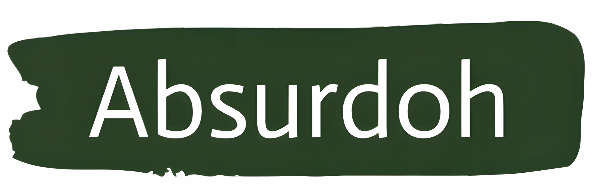
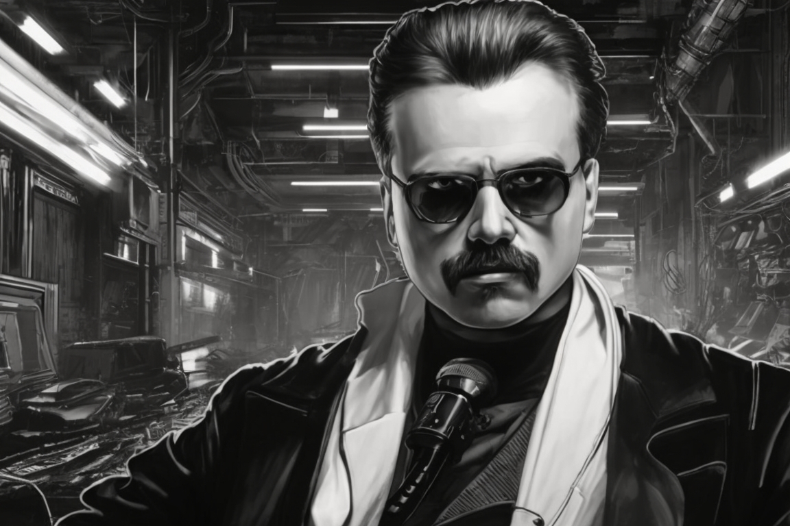

Filosofía del Absurdo
Tu Vida es Absurda
Friedrich Nietzsche
Röcken, 15 de octubre de 1844-Weimar, 25 de agosto de 1900) fue un filósofo, poeta, músico y filólogo alemán, cuya obra ha ejercido una profunda influencia en el pensamiento mundial contemporáneo y en la cultura occidental. Nietzsche escribió sobre temas tan diversos como el arte, la filología, la música, la historia, la religión, la ciencia o la tragedia. Hizo una crítica de la cultura, la religión y la filosofía occidental mediante la genealogía de los conceptos que las integran, basada en el análisis de las actitudes morales (positivas y negativas) hacia la vida.
Toda la cultura occidental tiene sus raíces en la Grecia Clásica y en la racionalidad defendida por Sócrates y Platón. Pero Nietzsche entiende esta etapa como el fin de la Grecia arcaica, una etapa filosófica que entendía la vida en sus dos aspectos fundamentales, que eran representadas en la tragedia griega por Apolo y Dionisos. El primero representaría el orden, la razón, la mesura. Mientras que el segundo representa lo irracional, lo instintivo, lo biológico.
Pero a partir de Sócrates, se olvida toda la dimensión dionisíaca de la realidad, a favor de la apolínea. Desde ese momento, todo era luz, belleza y armonía. Por eso, para Nietzsche, la crisis de la cultura occidental, empieza con Sócrates y Platón que niegan el mundo de la vida, de la tierra y del cuerpo, y se inventan un mundo racional, al que entienden como el único real e identificando el mundo biológico como el no ser o lo no real.
La crisis de la cultura occidental alcanza su máximo esplendor con la tradición judeocristiana, considerando que la creencia en un único Dios, constituye la máxima perversión de la misma. El ataque de Nietzsche a la tradición occidental se dirige:
A la filosofía, entendida como metafísica,
A la religión,
A la moral,
A la ciencia.